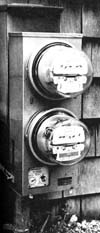

The top meter installed by the Narragansett Electric Company measures the amount of utility company power consumed by the Morgans ... while the bottom one keeps track of how much of the Morgans' ""homemade juice"" is fed back the other way into Narragansett's lines